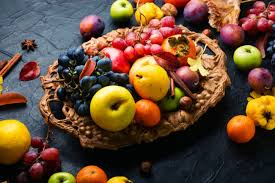
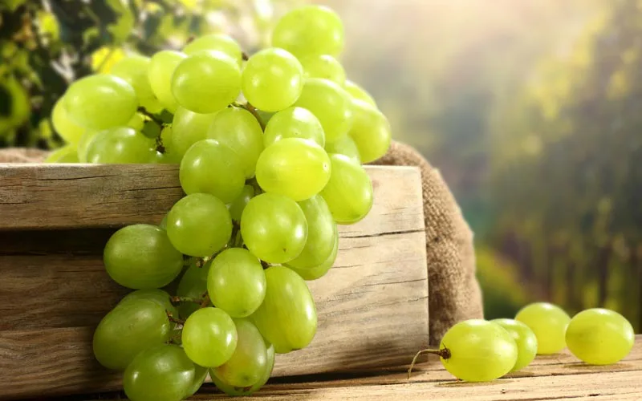
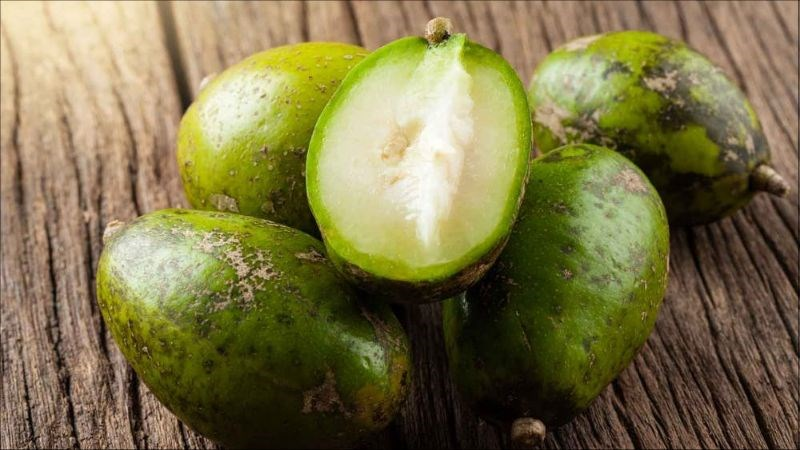
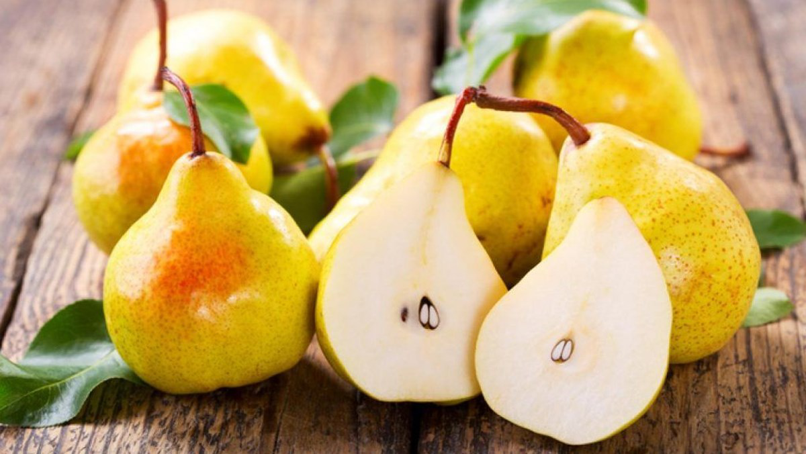
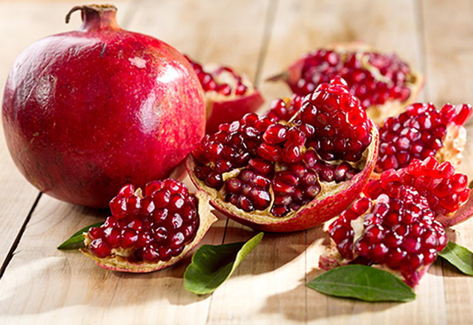

Nhãn lồng khi ăn cùi giòn ráo, vị thơm, ăn giòn sần sật khiến ai ăn cũng thích mê, đặc biệt là tháng 7 là thời điểm quả nhãn to, mọng nước và cùi dày nhất. Vì vậy bạn nhất định phải ăn nhãn lồng trong tháng 7 này nhé.
Trái hồng xiêm là thứ quả đặc trưng của miền Bắc. Thịt mềm, ăn thơm và ngon đậm đà.Tuy nhiên tháng 7 mới là đầu vụ nên khi chọn mua hồng xiêm bạn nên ở những nơi uy tín để giảm thiểu tối đa lượng thuốc trừ sâu, chất kích thích vào trong cơ thể. Hãy luôn đảm bảo bạn đã rửa sạch chúng trước khi ăn.
Hầu hết các bà nội trợ đều mua những trái hồng xiêm xanh đã già về nhà. Sau đó, để vài hôm, trái hồng xanh sẽ tự chín mềm và ăn ngọt lịm.
Từ lâu quả nho đã được chứng minh là một loại quả chứa nhiều chất bổ có lợi cho sức khỏe như: Tăng cường sức đề kháng, chống lão hóa, tốt cho tim mạch, có tác dụng thải độc tố…
Thịt quả nho ăn dễ tiêu, giải khát, thông tiểu và lợi mật. Trong quả nho có chứa polyphenol có tác dụng chống oxy hóa, bảo vệ các tế bào và các nguyên sinh chất trong cơ thể, chống lại sự hình thành các gốc tự do. Vì vậy ăn nho giúp con người trẻ lâu, làm giảm nếp nhăn, tăng sức đề kháng, chống lại sự xâm nhập của các loại virus.

Thanh Long là loại trái cây được ưa thích bởi sự mềm và mát của nó. Loại quả này khá rẻ nhưng có nhiều chất có ích sức khỏe như vitamin C, B1, B2, B3, phốt pho, sắt, canxi.
Không chỉ vậy, thanh long còn có tác dụng chống ung thư, ngừa lão hóa, cải thiện tim mạch, tiêu hóa, phòng ngừa tiểu đường, tốt cho mắt, giảm viêm khớp và làm đẹp. Tùy sở thích mà bạn có thể chọn cho gia đình loại thanh long ruột đỏ hay ruột trắng đều có tác dụng rất tốt đối với sức khỏe.
Mùa thu là lúc quả chuối chín cây ngọt lịm và ngon nhất. Chuối cung cấp đủ 8 axit amin cần thiết cho cơ thể và nhiều vitamin, khoáng chất mà con người không tự tạo ra được.
Nếu bạn ăn 1-2 quả chuối mỗi ngày sẽ giúp chống thiếu máu, cải thiện trí nhớ, làm đẹp da, hỗ trợ hệ thần kinh, giảm cân. Đặc biệt, chuối tốt cho người cố gắng bỏ thuốc lá nhờ vitamin B6, B12, C, A1, magiê và kali giúp phục hồi cơ thể sau ảnh hưởng của nicotine trong thuốc lá.
Cóc loại trái cây này luôn được mọi lứa tuổi, từ trẻ em, học sinh, sinh viên đến người lớn đã có gia đình ưa chuộng.

Lê là một trong các loại trái cây đúng vụ trong mùa thu. Lê có nhiều tác dụng chăm sóc sức khỏe, giúp thúc đẩy tiết nước bọt và tôi vôi khát, giảm ho và đờm, thanh nhiệt và hạ sốt.
Đặc biệt, lê hữu ích cho người bị ho, họng khô, đau họng và táo bón. Nó cũng kích thích tiêu hóa, giảm cholesterol và điều hòa lượng đường trong cơ thể.

Lựu không chỉ là loại trái cây ngon mà còn có nhiều lợi ích cho sức khỏe. Quả lựu chứa một lượng lớn chất oxy hóa, vitamin C, A, E, canxi, acid folic, chất xơ và kali, giúp tăng cường hệ miễn dịch, bảo vệ sức khỏe và chống lại nhiều bệnh tật.

Trong chanh đào có chứa rất nhiều vitamin A, B1, B2 và đặc biệt là có lượng vitamin C dồi dào, thường có từ tháng 8 đến tháng 10 âm lịch. Tuy nhiên tầm khoảng tháng 9 là thời điểm chanh đào vào giữa vụ sẽ rẻ, ngon và mọng nước nhất. . Mỗi trái chanh đào có chứa axit citric (chiếm khoảng 8% khối lượng quả chanh khô) nên có tác dụng chữa ho, thanh nhiệt, viêm họng, giảm mỡ, giảm béo rất tốt
Chanh đào thường được ngâm chung với mật ong để làm thuốc trị ho, cảm sốt cho cả nhà kể cả trẻ em.
Tuy nhiên, mùa vụ của loại trái cây này khá ngắn nên khi mua bạn nên mua ở những nơi uy tín và mua đúng mùa vụ để chanh đào được tươi và ngon hơn, hạn chế tối đa chất bảo quản.